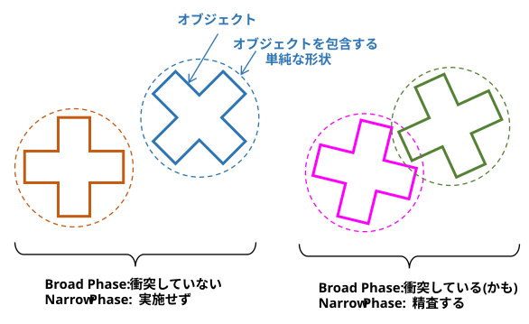
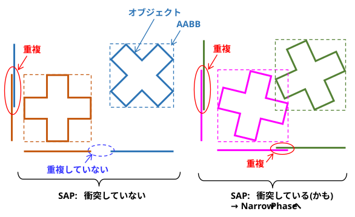
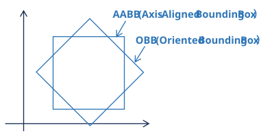
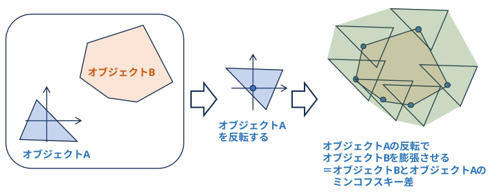
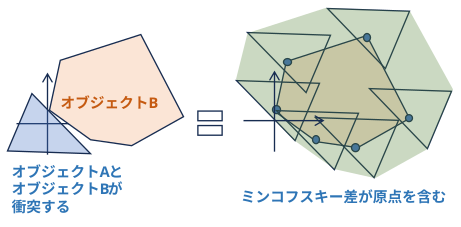
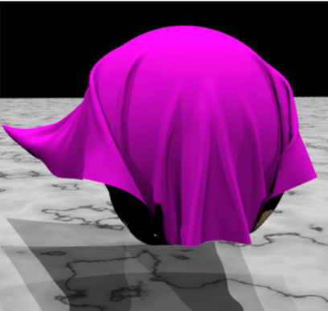

(タスク) 衝突検出 / 衝突判定
何ものか？
「2つ以上のオブジェクトが互いに交差・接触したか」を判定するプログラム処理のこと。
オブジェクトの数が増えると、判定対象の組み合わせが多くなるため、2つのフェーズに分けて処理することが多い。
-
・Broad Phase (ブロード・フェーズ / 広域フェーズ)
「衝突している可能性のあるペア」を高速に絞り込む（culling）ための処理。オブジェクトを包含する単純な形状を使って、高速に判定を行う。
-
・Narrow Phase (ナロー・フェーズ / 精密フェーズ / 狭域フェーズ)
Broad Phase（広域フェーズ）で絞り込まれた「衝突の可能性があるオブジェクトのペア」に対して、「本当に衝突しているか」「どの位置で、どのくらい深く交差しているか」を数学的・幾何学的に厳密に計算するフェーズ。
以下のようなことを計算する。
・ 衝突の有無 (Boolean)： 接触しているかどうか
・ 貫通深度 (Penetration Depth）： めり込み具合
・ 衝突法線 (Collision Normal）: 衝突した面の法線 ・・・ どの方向に移動すれば衝突しなくなるか

Broad Phase アルゴリズム
(1) 並べ替え・時間コヒーレンス型 (Sorting & Temporal Coherence)
-
Sweep and Prune (SAP) / Sort and Sweep
・各辺や各面が座標軸に平行な矩形や直方体でオブジェクトを包含する。
(AABB: Axis-Aligned Bounding Box AABB境界ボックス)。
・境界ボックスの最小値・最大値を各座標軸に投影し、1次元の線分(インターバル)として並べ替える。
・すべての軸で線分が重なっているペアだけを衝突候補とする。
動画処理の場合、オブジェクトの位置が前のフレームから大きく変わっていない場合は、挿入ソートを使うと、ほぼ整列しているため O(N) に近い高速処理が可能になるらしい･･･

(2) 空間分割型 (Spatial Partitioning)
空間そのものを格子状（グリッド）や階層的に細分化し、「同じ区画、または隣接する区画にいるオブジェクト同士のみをチェックする」という系譜。
-
Uniform Grid（一様グリッド） / Spatial Hashing（空間ハッシュ）
空間を一定サイズ（2Dなら正方形、3Dなら立方体）の格子で細切れにする。
オブジェクトの中心座標やAABBが含まれる格子に登録する。
広大な空間では、メモリを節約するために格子の座標をハッシュ関数に通して1次元のハッシュテーブルに格納する「Spatial Hashing」が使われる。
-
Quadtree（四分木・2D用） / Octree（八分木・3D用)
空間を再帰的に4つ（または8つ）の「子空間」へ等分割していく木構造。オブジェクトが密集しているエリアは細かく分割し、過疎エリアは粗いままにすることで、空間の疎密に柔軟に対応する。
(3) 階層構造型 (Bounding Volume Hierarchy - BVH)
空間ではなく、オブジェクトそのものを木構造でグループ化していく系譜。現代の商用物理エンジンの主流となっている、らしい･･･。
Narrow Phase アルゴリズム
(1) 形状限定の高速アルゴリズム（Analytical Tests）
球体やカプセル型など、数式で簡単に表せる単純な形状（プリミティブ）同士の判定。
オブジェクトの形状自体が単純なので Broad Phase、Narrow Phaseに分類しずらい･･･
※ カプセル： 線分を球で覆った形状 = 円柱の上下に半球をくっつけた形状のこと。
-
球 vs 球（Sphere-Sphere）
2つの球の中心点間の距離が、それぞれの半径の合計より小さいかを調べるだけなので、極めて高速。
-
カプセル vs カプセル:
2本の線分間の最短距離を計算し、それが半径の合計以下かを判定する (だけ)。
(2) 凸多面体（Convex）向けの汎用アルゴリズム
「凸多面体（凹みのない形状）」同士の判定アルゴリズム
-
SAT (Separating Axis Theorem / 分離軸定理)
2つの物体の間に「光を当てたとき、影が離れるような隙間（分離軸）」が1つでも存在するかを調べる。
3Dの立方体（OBB: Oriented Bounding Box）同士の判定などに強力。すべての軸をチェックして隙間がなければ「衝突している」と判定でき、同時にめり込みの深さや法線も分かる。

-
GJKアルゴリズム (Gilbert-Johnson-Keerthi)
『A fast procedure for computing the distance between complex objects in three-dimensional space』 (1988)
2つの形状の「ミンコフスキー差（Minkowski Difference）」という特殊な空間集合を作り、その集合が原点（0, 0, 0）を含むかどうかを調べることで衝突を判定する。

オブジェクト B を移動させた時、ミンコフスキー差が原点(0,0,0)を含むなら オブジェクトAと衝突する。

物理エンジンのコアとなる超重要アルゴリズムです。球、円柱、凸メッシュなど、どんな凸形状の組み合わせでもこれ1つで一元的に処理できる。
-
EPA (Expansion Polytope Algorithm)
GJK アルゴリズムとセットで使われます。GJKで「衝突している」と分かった後、ミンコフスキー空間のポリゴンを外側に拡張していくことで、正確な「めり込み深さ」と「衝突法線」を算出する。
-
Lin-Canny アルゴリズム V-Clip
『An efficient and accurate method for residual distance and feature-based collision detection for moving polyhedra』(1991)
『V-Clip: Fast and Robust Polyhedral Collision』(1997)
凸多面体の「特徴（頂点・辺・面）間の最短距離」を、ボロノイ領域（Voronoi regions）の概念を用いて追跡する手法。
物体の運動に「時間的・空間的な連続性（コヒーレンス）」がある場合に、前フレームの結果を再利用して極めて高速に計算できる点に革新性があった（後に「V-Clip」として頑健に改良された）。
(3) 凹多面体（Concave / 複雑な3Dモデル）の判定
-
凸分解（Convex Decomposition）
凹多面体を複数の凸多面体の集合（積集合または和集合）に分解し、計算が高速な凸多面体同士の衝突判定アルゴリズム（GJK法やLin-Canny法、分離軸定理など）に帰着させるアプローチ。
-
完全凸分解 (Exact Convex Decomposition)
凹多面体を隙間なく、完全に正確な凸多面体のパーツに分割する手法。
形状によってはパーツ数が爆発的に増加（組合せ爆発）し、実用的なリアルタイム処理が困難になる欠点がある。
-
近似的凸分解 (Approximate Convex Decomposition - ACD)
実用性を重視し、ユーザーが許容できる一定の誤差（凹み）を認めつつ、できるだけ少ない個数の凸多面体に分割する手法。
V-HACD (Volumetric Hierarchical Approximate Convex Decomposition)
ゲームエンジン（UnityやUnreal Engineなど）や物理シミュレータ（Bullet Physics、PhysX）で最も広く標準採用されているアルゴリズム。ボクセルベースで階層的に近似分割を行う。
-
境界表現・BVH（Bounding Volume Hierarchy
凹多面体の表面（ポリゴンメッシュ）をそのまま扱い、空間構造を木構造（ツリー）で管理することで、判定が必要なポリゴンペアを高速に絞り込むアプローチ。
AABB / OBB Tree
凹多面体のポリゴン群を、軸平行境界ボックス（AABB）や指向性境界ボックス（OBB）などの簡単な立体（Bounding Volume）で段階的に包み込み、木構造を構築する。
衝突判定時は、まずこの木構造のノード同士の重なりをチェックし、交差していない枝を切り落とす（プルーニング）ことで、最終的に交差する可能性のあるポリゴン同士のみを厳密に判定する。
Broad とか Narrow とか、きれいに分類できず･･･
-
k-D Tree / 八分木 (Octree)
オブジェクト側ではなく、空間そのものを段階的に分割して凹多面体のポリゴンを格納する手法。静的な背景メッシュと動的オブジェクトの衝突判定などに多用される(らしい･･･)。
(4) 変形する物体への対応（布・流体シミュレーション）
-
連続的衝突検出 / CCD
『Robust treatment of collisions, contact and friction for cloth animation』(2002)
布シミュレーションのリアリティを高めた。

(5) 微分可能・AI・最適化アプローチ
-
微分可能な衝突検出
『Differentiable Collision Detection for a Set of Convex Primitives』(2022)
衝突検出を凸最適化問題として定式化することで、物体の位置や姿勢に対して完全に微分可能なフレームワーク（DCOL）を提案した(らしい･･･)。
-
SDF (Signed Distance Field) へのニューラルネットワーク適用
『Efficient Collision Detection Framework for Enhancing Motion Generation in Robotics』(2024)
project page
空間の各点から物体表面までの符号付き距離を保持する「SDF（Signed Distance Field）」を、軽量なニューラルネットワークで高速に近似・代替するアプローチ。